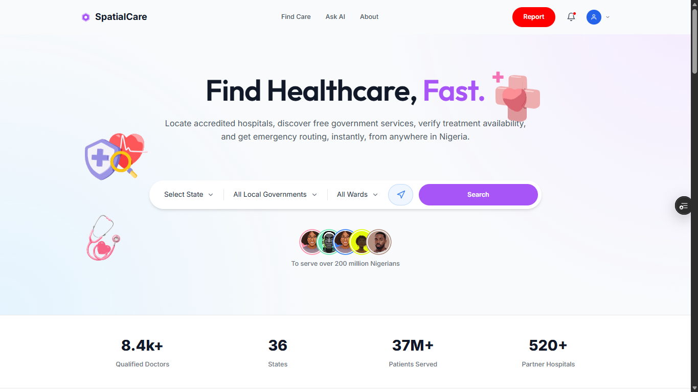
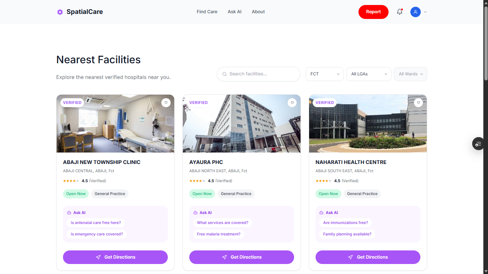
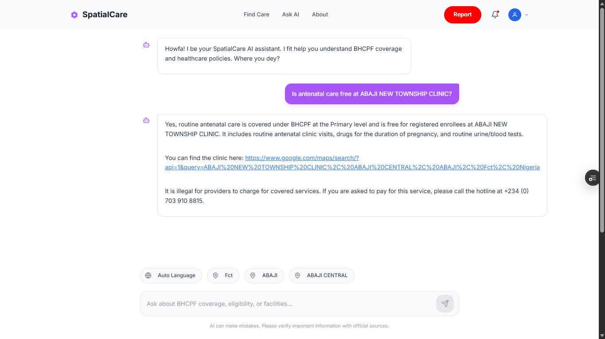
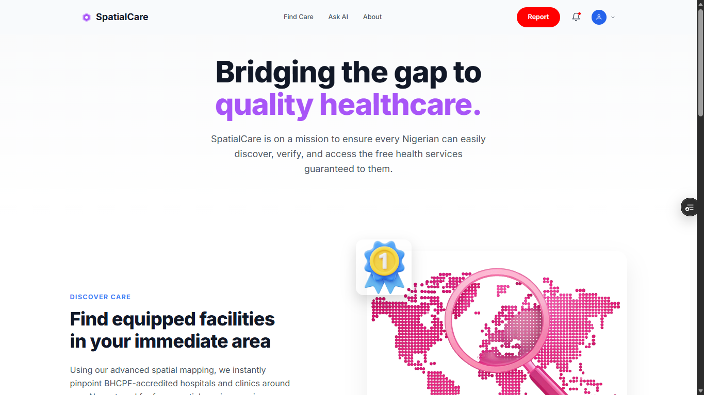

SpatialCare
An AI health assistant that tells Nigerians what their BHCPF cover actually pays for—in their own language—and sends them to the right facility with a map link. I built the backend and AI layer end to end.




Context
Nigeria’s Basic Health Care Provision Fund (BHCPF) pays for basic services at public facilities across the country, but most citizens don’t know what’s covered, what their ward qualifies for, or where the nearest facility is. That gap leaves people paying out of pocket for care they’re legally entitled to get free. SpatialCare closes it with a simple conversation.
What I built
The backend and AI layer for a healthcare access chatbot. Instead of a heavy vector database, I engineered a structured RAG pipeline: a FastAPI service that takes the user’s location (state, LGA, ward) and runs real-time SQL filtering against Supabase (PostgreSQL) to pull the matching facilities plus the full benefits ruleset, capped so the model’s context stays grounded. The retrieved rows are injected into Gemini 2.5 Flash with strict no-hallucination instructions, and every recommended facility ships with a clickable Google Maps link generated from its name, ward, LGA and state.
Why this approach
Location lookups need exact matches, not semantic guesses—someone asking for a clinic in Abaji LGA needs the actual Abaji facilities. SQL retrieval is fast, costs practically nothing, and can’t hallucinate a location the way a vector search can. The model only handles the language; the facts come from the database.
Role & scope
End to end on the backend and AI: data model and seed data, SQL retrieval, prompt design and grounding, multi-dialect handling, Google Maps link generation, and deployment on Render with environment secrets and a pipeline that picks up every push.
Result
The AI detects the user’s language and replies fluently in English, Pidgin, Hausa, Yoruba or Igbo, and surfaces the official hotline when a facility tries to charge for covered care. A live API serving nationwide health queries against a database of thousands of facilities.